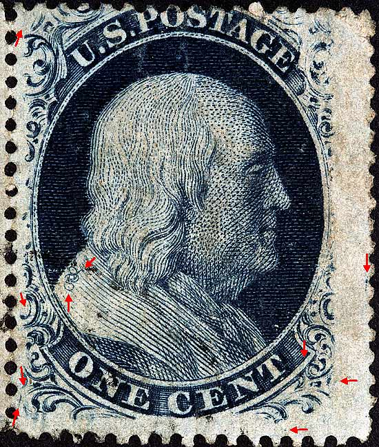
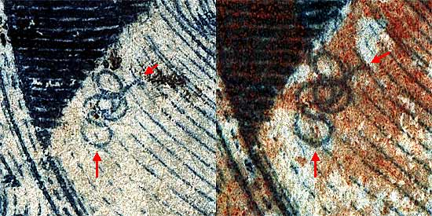
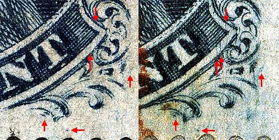
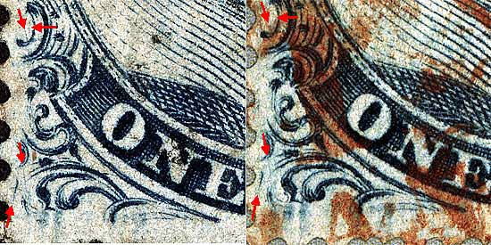
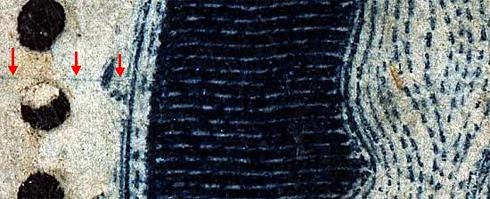
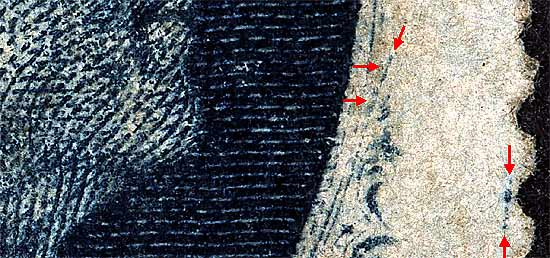
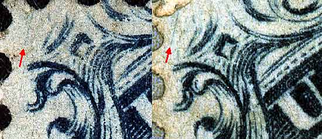
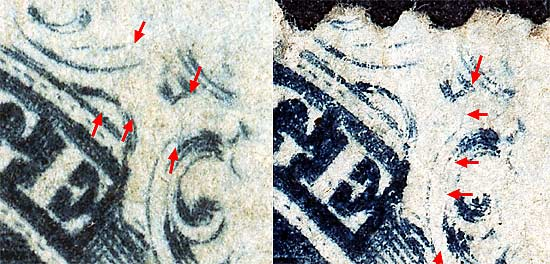

1¢ Franklin Issue of 1857-61, PLATE 7. Pos 99R7, (Scott #24) |
| Scott #24 Blue, Type V, Relief F, 10th Row Issued only perforated. CURL IN SHOULDER VARIETY Of all the Type V varieties perhaps the best known and the more sought after, are the interesting shoulder curls coming from the right pane of Plate 7, positions 57R, 58R, 59R, 97R, 98R and 99R7. Part of a horizontal pair consisting of 98R7 and 99R7 |
|  |
| Figure 1. (Below) Close up view of the CURL. The shoulder curl found on Positions 58R7 and 59R7 is very similar in appearance, all three of these positions have the top loop of the curl. The 10th row positions can be identified from the right lower scroll, which is more complete than on 6th row positions. Also see other images below for additional plating marks.
 |
| Figure 2. (Below) Various consistent plate scratches not illustrated in the published plating diagrams but will aid the plater in definitively confirming the position.
 |
| Figure 3. (Below) Various consistent plate scratches not illustrated in the published plating diagrams but will aid the plater in definitively confirming the position.
 |
| Figure 4. (Below) Figure 4. (Below) Horizontal plate scratch below Ornament D and cutting into the back of Franklin's portrait. This scratch is not illustrated in the published plating diagrams .
 |
| Figure 5. (Below) Heavy dots and near vertical line of color in the right margin. These marks are not illustrated in the published plating diagrams
 |
| Figure 6. (Below) Near vertical plate scratch in the upper left corner. This scratch is not illustrated in the published plating diagrams. Other curl positions have similar but not identical scratches.
 |
| Figure 7. (Below) Faint diagonal plate scratches found in upper right corner ornaments. They are difficult to see on late or worn plate impressions. Other curl positions have similar but not identical scratches. A small dot in the E of POSTAGE not illustrated in the plating diagrams. Note that this dot occurs on all 6 shoulder curl positions (57-58-59R7, 97-98-99R7), thus it is not useful in identifying the actual position.
 |
DISCLAIMER and COPYRIGHT INFORMATION: Thanks for visiting this site. I hope you learn something new as we are making new discoveries all the time. You, the visitor, have my permission to link to my pages and to share the INFORMATION with others. The images themselves fall under the fair use guidelines established by the United States Congress and Copyright law. Basically contact us before using. I also ask in return that you send me an e-mail if I have made a mistake, or have made some other technical blunder that in my rush to put these pages up would cause the visitor confusion. Please also visit my other website at www.slingshotvenus.com. and support the live music arts. While your there, be sure to purchase our music. There are not many philatelic rock stars around and we need all the help we can get. :-) I can be reached at: nerdman@ix.netcom.com Update 2/13/08 |